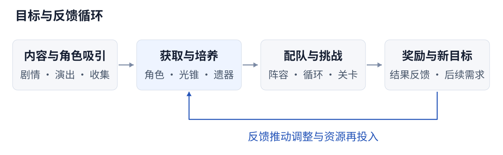
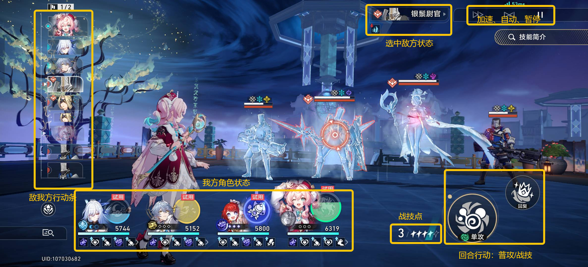
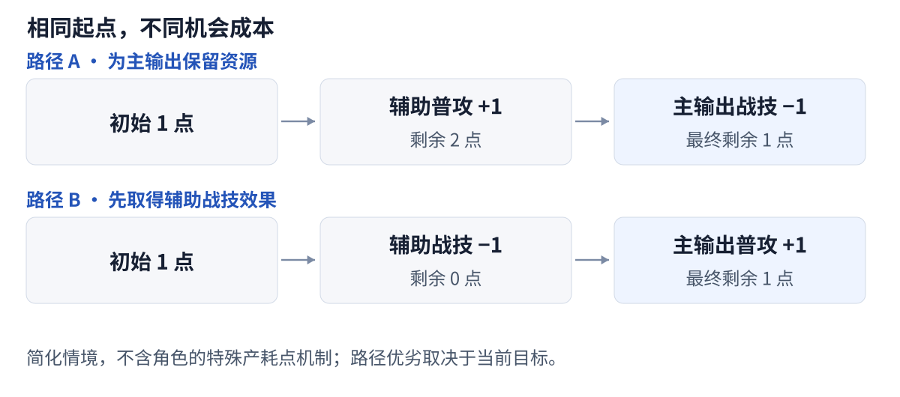
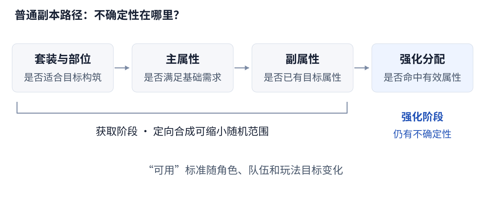

《崩坏：星穹铁道》系统拆解
低操作负担下，策略与养成如何形成长期目标？
分析范围：主要撰写于 2025 年 9 月 20 日，3.5 版本。本文基于开服以来的个人游玩体验，聚焦战斗、养成及其相互作用。
核心判断
- 低操作门槛仍能容纳策略取舍。 配队与装备决定可用手段，战技点、行动顺序和终结技时机决定手段如何兑现。
- 养成提供了两种不同的目标。 等级与行迹带来可预期的成长，遗器随机性延续长期追求，也增加了投入无法转化为有效提升的风险。
- 持续推出新目标，需要兼顾旧投入的价值。 当角色、装备与关卡需求接连变化，玩家承受的是整支队伍重新成形的成本。
01 · 全局：内容吸引、养成与挑战相互连接
《崩铁》将角色收集、剧情探索与回合制战斗结合在一起。剧情和演出建立角色吸引力，养成将角色转化为可用的战斗能力，关卡再为阵容配置与资源投入提供检验场景。

图中呈现的是目标与反馈关系，不是每名玩家必须依次完成的流程。偏好剧情的玩家可以降低挑战投入；追求高难表现的玩家则会反复调整配队、练度和操作。
要点： 同一套角色内容承载了情感收集、基础通关和极限挑战等不同目标。系统需要让这些目标可以并存，避免所有玩家都被推向同一条养成标准。
02 · 战斗：个人最优动作未必是团队最优选择
战前配置决定可用手段
玩家先根据敌人的弱点、机制和关卡目标选择队伍，再配置速度、装备与技能循环。不同角色不仅承担输出、增益和生存职能，也影响全队的战技点供需。
光锥则把装备效果与角色手持物表现分离：装备选择可以影响构筑，而不必改变角色武器和动作的视觉设定。它扩大了表现设计的自由度，装备差异的辨识则更多依赖图像、文本与实际效果。
局内操作处理共享资源与行动时机

| 决策对象 | 玩家需要权衡什么 | 设计作用 |
|---|---|---|
| 战技点 | 当前角色使用战技，是否会挤占后续角色的资源？ | 将单个角色的动作连接为团队资源分配 |
| 行动顺序 | 增益、治疗与输出在什么时候发生？ | 让速度和行动提前产生超出面板数值的价值 |
| 终结技 | 立即释放，还是等待增益、削韧或生存需求？ | 在常规行动之外增加时机选择 |
| 弱点击破 | 优先击破哪名敌人，是否值得调整攻击目标？ | 将属性、敌人机制与行动控制联系起来 |
一个战技点分配情境
假设当前只有 1 点战技点，辅助先于主输出行动；普攻回复 1 点，战技消耗 1 点，不考虑额外产点、耗点或插入行动。

两条路径最终都剩 1 点，但效果不同：前者保留了主输出使用战技的机会，后者先取得辅助战技的效果。若当前必须治疗或补增益，后者可能更合理。评价动作，需要看整段循环和当前目标。
要点： 共享资源让少量按钮也能产生团队取舍。不过，当养成优势足以跳过敌人机制，或关卡只剩固定操作顺序时，这些取舍就可能失去意义。低门槛与策略深度是否共存，需要在具体关卡中检验。
03 · 养成：从可预期成长，到不确定的提升
| 养成部分 | 主要获得什么 | 决策重点 |
|---|---|---|
| 等级、晋阶与行迹 | 属性成长、技能提升与机制解锁 | 有限资源先满足哪个角色、哪项能力 |
| 光锥 | 基础属性与构筑相关效果 | 命途适配、队伍需求与替代选择 |
| 星魂 | 数值或机制上的进一步提升 | 追加获取成本与目标收益是否匹配 |
| 遗器 | 套装效果、属性组合与强化成长 | 先达到可用标准，再继续追求更优配置 |
前几类成长通常有明确的投入目标；遗器则将目标拆成多个随机环节。持续获得装备，并不意味着持续获得当前角色需要的装备。

这里需要区分两条标准：可用指装备能支撑目标玩法与队伍循环；更优指在此基础上继续提高属性与表现。角色不同、目标不同，标准也会变化，不应统一等同于“套装正确、双暴完美”。
在套装收益较高的构筑中，4 件隧洞遗器与 2 件位面饰品会收紧替换空间，但这不等于规则禁止散件；是否保留套装，仍应比较实际收益。
3.5 版本的可控工具： 自塑尘脂可用于定向合成的主副属性；变量骰子提供对满级遗器副属性强化分配的重掷机会。前者缩小胚子生成的不确定性，后者增加尝试机会，都不能保证最终属性恰好满足目标。3.5 已将遂愿尘脂合并至自塑尘脂。版本规则说明
要点： 随机养成能持续提供追求，但需要让玩家辨认出自己的进展。若多次投入都无法改善配装，长期目标可能变成重复尝试的负担；工具设计应明确解决的是“获得合适胚子”，还是“让胚子有效成长”。
04 · 系统张力：新增目标与既有投入的价值
关卡的敌人组合、弱点和特殊增益会改变阵容的适用性。轮换的关卡需求鼓励多队培养，但若阵容切换成本过高，同一机制也可能使玩家感到必须持续追赶。
这种成本不只来自获取角色，还包括光锥、行迹、遗器，以及角色之间的速度和资源配合。一次角色替换，可能要求整队重新分配装备。
以 3.5 的“末日幻影·天狼战首”为例，击破带来的效果包含恢复战技点和激活终结技；这说明击破价值会被关卡规则放大，不能概括为固定的少量伤害与行动延后。
因此，判断迭代压力时，需要同时观察三件事：旧阵容还能否达到目标、转用新阵容需要多少投入、不同策略是否仍有可接受的替代解。缺少统一的投入量与测试条件，仅比较几支队伍的伤害，无法可靠地衡量整体强度增幅。
要点： 新角色和新关卡可以提供目标，但需要给旧投入保留用途。除了提升奖励，还可以通过多种有效的关卡解法，以及有限的养成保障，降低切换目标时的阻力。
05 · 结语
《崩铁》的战斗与养成相互依赖：低操作负担让更多玩家进入，构筑与共享资源提供决策，持续成长则把这些决策连接到长期目标。
我更关注的设计问题是：让投入能够转化为可感知的进展，同时保留不同目标和不同解法。